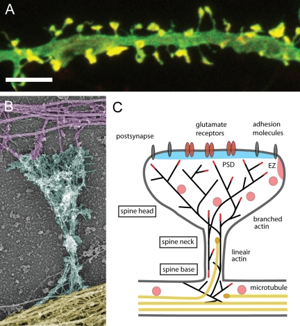

15 신경가소성
15.1 자기 진화하는 뇌
15.1.1 신경가소성 개념의 발단
인간의 뇌를 이루는 천억개 가까운 신경세포 들은 독자적으로는 아무런 기능도 하지 못한다. 멀고먼 우주를 탐사하고, 다른 차원에 대한 꿈을 꾸며, 스스로의 존재를 고민하는 고귀한 기능은 오로지 이들 신경세포 사이의 연결에서 비롯되다. 이러한 연결의 기본 도식은 이미 신경발달 과정 중에 완성되기 때문에, 조현병의 발병을 추적하는 학자들은 태생기 발달단계에 신경망이 만들어지는 과정을 집중적으로 조사해 왔으며, 이를 통해 유전 정보와 환경이 서로 얽히면서 어떻게 결함이 있는 신경망을 만들어내는지 조금이나마 이해하게 되었다.
천억개 가까운 신경세포는 거의 대부분 출생 전에 만들어지며, 개체가 죽을 때까지 영속한다. 만약 이들 사이의 연결 도식(connectivity scheme) 마저 생후 수년 사이에 완결되어 그 후에 더 이상 변하지 않는다면, 조현병에 걸릴 운명을 타고난 사람은 무슨 수를 써도 그 숙명에서 빠져나올 방도가 없을 것이다. 게다가 약물이라 할지라도 신경망이 내는 잡음을 임시방편으로 줄여주는 것에 불과하고, 설계 자체가 잘못된 신경망의 구조는 손댈 수 없으니, 제대로 된 치료가 아니라 어설픈 미봉책에 불과할 것이라 하겠다.
활발하게 분열하는 세포들을 거느린 뇌를 제외한 타 조직에서는 부실한 세포는 자연 도태되고, 새롭고 건강한 세포들이 그 기능을 떠맡으면서 전체 조직의 활력을 도모한다. 이와 달리 중추신경계에서는, 비록 성인에서도 극히 소량의 새로운 신경세포가 태어난다고는 하지만, 그것만 갖고는 뇌의 젊음을 유지하기에는 부족할 것이다. 그렇다면 신경세포를 죽이지 않으면서도 그 기능을 업데이트 할 수 있는 장치가 필요하다.

이미 1900년대 초 Cajal1은 말초의 신경세포들이 퇴행하기도 하고 성장하기도 하는 것을 목격하고 가소성(plasticity)이라는 개념을 제안하였으며, 이 현상이 말초 뿐 아니라 중추 신경계에서도 일어난다고 믿었다. 그러나 1970년대까지만 해도, 대부분의 신경과학자들은 성인의 뇌조직은 더 이상 바뀌지 않는다는 도그마를 버리지 않았다. 1964년 Diamond2가 최초로 성인의 뇌 조직이 해부학적으로 형태를 바꾸는 것을 보고하였고[1], 이후 뇌졸중 등으로 뇌 기능을 일부 상실한 환자들이 조금씩 기능을 회복해가는 과정을 연구하면서 신경가소성의 증거들이 속속 보고되었다. 신경가소성 개념이 신경과학자들은 물론 일반인에게도 낯설지 않은 개념으로 정착한 데는 Merzenich3의 공이 크다. 그는 30년 가까이 신경가소성을 연구하면서 다앙한 신경질환 환자의 재활 치료에 지대한 영향을 끼쳤다.4
1 Santiago Ramón y Cajal (1852–1934): 스페인의 신경생물학자로 주로 중추신경계의 신경해부학, 조직학 연구에 매진하였다. 1894년 영국왕립학회에서 “성인의 신경세포는 성장할 수 있고 새로운 연결을 만들어낼 수 있으며, 이는 학습 현상을 설명할 수 있을 것이다”는 취지의 연설을 하여 신경가소성 원리를 최초로 내놓았다.그가 사용한 “신경 가소성”이라는 용어는 루마니아의 신경생물학자 Ioan Minea(1878~1941)에게서 차용한 것이다. Cajal은 신경세포를 염색하는 기법을 창안한 Camillo Golgi와 함께 1906년 노벨 생리의학상을 수상하였다. 그는 현미경으로 본 신경조직의 구조를 다수의 아름다운 스케치로 남겼고, 이는 후세들의 교육용 자료로 널리 사용되었다. 그가 남긴 스케치들은 2017년 “The Beautiful Brain: The Drawings of Santiago Ramón y Cajal”이라는 저서로 출판되었다.)
2 Marian Diamond (1926~2017): 미국의 신경생물학자. 신경가소성 개념을 널리 홍보하였으며, 아인슈타인의 사후 뇌조직을 분석한 것으로 유명세를 탔다.
3 Michael Merzenich (1942~): 미국의 신경생물학자. 2004년 TED에 출연하여 “성인 신경가소성의 점증하는 증거들 (Growing evidence of brain plasticity)”이라는 제목으로 공개강연함으로써, 대중들의 이목을 집중시키는데 성공하였다. 2013년에는 “Soft-wired: How the New Science of Brain Plasticity Can Change Your Life”라는 저서를 출판하였다.
4 이 밖에도 일반 대중에게 신경가소성 개념을 전파하는데 큰 영향을 끼친 것은, 2007년 Norman Doidge에 의해 쓰여진 “The Brain That Changes Itself”라는 저서이다.
15.1.2 신경가소성의 개념
신경가소성은 중의적으로, 즉 1) 뇌의 자기 치유 현상, 그리고 2) 학습과 기억을 가능하게 하는 신경세포의 변화라는 의미로 사용된다. 대중의 뇌리에 각인된 신경가소성의 이미지는, 뇌 손상을 입었던 환자가 서서히 기능을 되찾아가거나, 중년이 넘어서도 새로운 기술을 습득할 수 있는 등의 성공담이다. 그러나 신경가소성은 좀더 보편적인 현상으로 이 기전이 없다면, 그 어떤 학습이나 기억도 일어나지 못할 것이다. 신경가소성을 문자 그대로 해석하면 신경망의 구조가 바뀐다는 뜻이지만, 반드시 구조가 변하지 않더라도 시냅스를 통한 신호전달의 효율이 변화되는 것은 모두 신경가소성 개념에 포함된다.5 이는 소위 장기 강화(long-term potentiation, LTP) 현상으로 잘 알려져 있는데, 장기 강화란 연접한 두 신경세포가 동시에 흥분하는 일이 반복되면 신경전달물질이 유리되는 효율이 높아지고, 시냅스 후 뉴런의 수용체가 민감해지는 현상이다. 장기 강화 현상은 기능만 변화하는 경우도 있고, 구조 변화가 뒤따르는 경우도 있다. Kandel6을 비롯한 연구진의 현미경에는 수상돌기에 조그마한 간극이 하나씩 둘씩 새롭게 생겨나기도 하고, 기존의 간극들이 사라지기도 하는 현상이 목격되었다.[2] 즉 기능적 변화는 구조적 변화를 동반한다는 중추신경계의 작동원칙을 다시 한번 확인한 셈이다.
5 이를 따로 시냅스 가소성(synaptic plasticity)이라 구분하기도 한다.
6 Eric kandel (1929~): 오스트리아 태생의 미국 신경생물학자. 원래는 정신분석가로 훈련받았으나, 콜럼비아 대학 교수로 재직하면서 생화학과 생물리학을 연구하였다. 그는 생물체의 경험을 통하여 시냅스의 효능이 어떻게 변화하는지, 그 분자생물학적 메커니즘을 연구하였고 이 과정에 NMDA 수용체가 핵심 역할을 한다는 것을 밝혀내었다. 또한 단백질 합성을 동반한 장기강화로 시냅스 간극이 생겨나는 등 구조가 변화하고, 이것이 장기 기억의 메커니즘이라는 것도 증명하였다. 2000년 노벨 생리의학상을 수상하였다.

- Dendritic spine morphology (green) and localization of F-actin (red) in cultured hippocampal neurons. Merged red and green are shown in yellow. Bar, 5 µm. (B) Actin and microtubule cytoskeleton organization in a mature dendritic spine from cultured hippocampal neurons visualized by platinum replica electron microscopy (EM). Axonal cytoskeleton, purple; dendritic shaft, yellow; dendritic spine, cyan. The spine head typically contains a dense network of short cross-linked branched actin filaments, whereas the spine neck contains loosely arranged longitudinal actin filaments, both branched and linear. The base of the spine also contains branched filaments, which frequently reside directly on the microtubule network in the dendritic shaft. (C) Schematic diagram of a mature mushroom-shaped spine showing the postsynaptic membrane containing the postsynaptic density (PSD; blue), adhesion molecules (gray) and glutamate receptors (reddish brown), the actin (black lines) and microtubule (yellow) cytoskeleton, and organelles. The endocytic zone (EZ) is located lateral of the PSD in extrasynaptic regions of the spine and recycling endosomes (pink) are found in the shaft and spines. Dendritic spines exhibit a continuous network of both straight and branched actin filaments (black lines). The actin network is spread in the spine base, gets constricted in the neck, undergoes extensive branching at the neck–head junction, and stays highly branched in the spine head. The actin-polymerizing barbed ends are indicated as red lines. Stable microtubule arrays are predominantly present in the dendritic shaft. A small fraction of the microtubules in mature dendrites are dynamic and depart from the dendritic shaft, curve, and transiently enter dendritic spines. The microtubule plus-ends are symbolized as yellow ovals.
1990년대 말에 행해진 런던의 택시운전사를 대상으로 한 실험은 수없이 많은 공개 강연에서 다루어졌다. 영국 런던 대학에 근무하고 있던 Maguire7는 택시 운전 자격증을 따고자 하는 지망자들을 대상으로 4년간에 걸쳐 해마(hippocampus)의 변화를 종적으로 관찰하였다. 그 결과 지망자들이 런던 시내의 지리를 조금씩 더 학습할 때마다 해마의 용적이 눈에 띄게 증가하였을 뿐 아니라, 면허 시험에 합격한 사람과 그렇지 않은 사람 간에도 용적가 확연히 차이가 난다는 것을 발견하였다.[4] 이를 통해 다 성정한 성인도 인지적 필요에 따라 뇌 구조를 활발하게 바꿔나간다는 것이 분명해졌다.
7 Eleanor Maguire (1970~): 아일랜드 출신의 신경생물학자. 뇌 영상 연구를 통해 현실생활에서 발현되는 기억과 이에 대응하는 구조적 변화를 찾아내는 연구를 수행하였다. 학습과 함께 해마의 구조가 변화한다는 것, 또는 fMRI 영상을 통해 기억의 내용을 엿볼 수 있다는 연구 등이 대표적 업적이다.
최근 문헌에서는 신경가소성보다 시냅스 가소성(synaptic plasticity)이라는 용어가 더 자주 등장한다.[5] 이는 신경세포의 구조 변화를 동반하는 가소성뿐 아니라, 시냅스를 통한 정보전달의 효율이 시시각각 변화하는 역동적 현상까지 총망라하는 개념이다. 중년 이상의 성인도 새로운 기술을 배울 수 있다는 식의 대중적 개념에서 벗어나, 시시각각 변화하는 환경에 가장 최적화하여 반응할 수 있도록 신경망을 끊임없이 세부조정하는 모든 기전을 아우르는 것으로 개념이 확장되었다. 인간은 과거의 경험을 토대로 현재의 대처 방안을 마련할 수 밖에 없기 때문에, 이런 식의 세부조정은 자연히 학습과 기억으로 연결된다. 여기서 말하는 학습과 기억이란, 개체 수준에서의 의식적 혹은 암묵적 기억뿐 아니라 세포 하나하나의 기억 역시 아우른다.
15.1.3 조현병과 신경가소성
이렇게 보면 조현병을 연구하면서 신경가소성을 다루지 않는 것은 가장 중요한 것을 놓치고 있다는 인상을 준다. 조현병 환자가 보이는 사고 장애, 인지 장애란 결국 외부 환경에 순간순간 효율적으로 적응하지 못한다는 것이고, 과거 경험을 통해 틀렸다는 것을 알면서도 틀린 답을 계속 고수하고 있는 것과 같다. 신경발달학적 가설이 개인이 어떤 신경망을 갖고 태어나느냐에 초점을 맞추는 것이라면, 시냅스 가소성을 통한 이해는 개인이 타고난 신경망을 어떻게 운용하느냐에 대한 질문이라고 볼 수 있다. 또한 치료적 함의도 크다. 약물 치료가 좀더 순조로운 세부조정으로 이어질 수 있다면, 나아가 수상돌기와 축삭이 유연하게 새로운 돌기를 만들어내고 새로운 연결을 도모할 수 있도록 도와줄 수 있다면, 훨씬 치료의 파급력이 커질 것이다. 신경가소성이란 한마디로 “우리 모두는 어떤 상황에서도 변화될 수 있다”는 믿음이다. 이는 조현병이라는 가혹한 형벌을 안고 가는 환자들에게도 희망의 메시지가 될 것이다.
15.2 시냅스 가소성
15.2.1 시냅스 가소성과 기억
1949년 Hebb8은 신경과학 뿐 아니라 컴퓨터 공학에서도 큰 영향력을 끼치게 될 이론을 다음과 같이 제안하였다.[6]
8 Donald Hebb (1904~1985): 캐나다의 심리학자. 1949년 “The Organization of Behavior”라는 저서에서 소위 Hebbian learning에 대한 개념을 소개하였다. 이 개념은 인지심리학 뿐 아니라 다층 신경망을 이용한 딥 러닝에도 지대한 영향을 끼쳤다.
“세포 B에 인접한 세포 A가 반복적으로 B를 흥분시키거나, 지속적으로 B가 흥분되는데 관여한다면, 어떤 종류의 성장 과정이나 대사의 변화가 양쪽 세포 모두 혹은 그중 하나에 일어나서, 결과적으로 A가 B를 흥분시키는 효율이 증가된다.”
이 가설이 살아있는 신경세포에서 실험적으로 확인된 것은 사반세기가 지난 1973년에 이르러서였다.9 한편 Hebb은 효율이 증가되는 것만을 이야기했지만, 신경세포들의 연결이 점점 더 강해지기만 해서는 금방 포화상태에 이를 것이기 때문에 학습이 일어날 리 만무하다. 따라서 효율이 감소되는 기전 또한 있어야 한다고 추정되었고, 얼마 지나지 않아 이 역시 실험적으로 증명되었다.[8]
9 장기 강화 현상을 누가 처음 발견했는지 딱 집어 말하기는 어렵다. 현대적 의미에서 장기 강화는 1964년 Eric Kandel이 바다민달팽이(aplysia)를 이용한 연구를 통해 처음 지적했고, 1966년 노르웨이의 Per Andersen과 지도학생이던 Terje Lømo은 토끼의 해마에서 장기 강화 현상을 관찰하였다. 그러나 확고한 증거는 Andersen 연구진에 합류한 Timothy Bliss와 Terje Lømo의 공동 연구로 1973년 발표되었다.[7]
1973년 Bliss10와 Lomo11가 처음 장기 강화 현상의 실험적 증거를 발표했을 때만 해도 시냅스나 신경전달물질에 대한 개념이 잘 알려져 있지 않았기 때문에, 이들의 발견은 시대를 너무 앞서간 것이었고 뒤를 이은 학자들이 많지 않았다.[9] 그래서인지 NMDA 수용체나 Mg2+ 스위치와 같은 분자생물학적 기전이 발견된 것은, 그 후로 10여년의 세월이 흐르고 난 다음이었다.[10]
10 Timothy Bliss (1940~): 영국의 신경생물학자. 런던의 National Institute for Medical Research에서 40년 가까이 근무하면서 장기 강화에 대한 연구를 수행하였다.
11 Terje Lømo (1935~): 노르웨이의 신경생물학자. Timothy Bliss와 함께 장기 강화의 생물학적 증거를 찾아내었다.
1980년대 중반에 이르러 장기 강화가 성공적으로 일어나려면 1) 시냅스 후 뉴런에 충분히 강한 자극이 입력되어야 하며 (cooperativity), 2) 시냅스 전 뉴런과 후 뉴런이 동시에 발화되어야 한다는 것(associativity)이 분명해지면서, Hebb의 학습(Hebbian learning)을 가능하게 하는 가장 유력한 기전이 장기 강화라는 공감대가 형성되었다. 그러나 이러한 현상이 과연 학습과 기억을 가능하게 하는 핵심 기전인지는 여전히 의문에 싸여있었다. 한편 1960년대 중반부터 Kandel과 동료 연구자들은 바다민달팽이(Aplysia)를 이용하여 시냅스가 하나밖에 없는 원시적인 신경계가, 어떻게 반복적인 시냅스 전 자극에 의해 민감해지거나 둔감해지는지를 집중적으로 연구하기 시작하였다.(5416543, 5416542) 이들은 시냅스 전 신경세포에서 신경전달물질이 방출되는 효율이 변화하는 현상이 바다민달팽이의 행동 변화와 연결된다는 것을 관찰하였고, 이 현상에는 시냅스 전 뉴런에서 Ca2+ 유입과 함께 CREB의 활성화 및 유전자 전사과정이 필요하다는 것을 알아내었다. 또한 후속 연구에서는 이러한 효율 변화와 함께 시냅스의 형태 자체가 변화한다는 것도 알아낼 수 있었다.(6828885) 연구자들은 좀더 복잡한 포유류의 뇌를 연구하기 시작했고, 하나의 신경세포에 자리잡고 있는 수천개 이상의 시냅스 중에서도 자극을 받은 시냅스 만이 효율에 변화가 생기며, 오랫동안 자극을 받지 못한 시냅스는 점점 소멸한다는 것을 알게 되었다.(19146817) 즉 더 이상 분열하지 않는 신경세포 대신, 시냅스가 생성과 소멸을 반복하는 것이었다. 이러한 연구들을 통해 학습과 기억은 단기적으로는 신경전달물질의 방출 효율에 따라, 장기적으로는 부단한 시냅스의 리모델링에 의해 저장된다는 결론에 이르게 되었다. 주로 해마의 CA3->CA1 시냅스 연구를 통해 정립되어온 장기 강화 이론, 바다민달팽이를 이용하여 쌓아올린 학습과 기억에 대한 시냅스 가소성에 대한 연구가 통합되면서, 시냅스 가소성은 명실공히 학습과 기억의 가장 유력한 기전으로 인정받게 되었다.(28103477)
이러한 과정을 통해 시냅스 가소성에도 다양한 종류가 있다는 것이 명확해졌다. 이는 다음과 같은 차원으로 구분지어 생각해볼 수 있다.
- 얼마나 오래 지속되는가?
- 시냅스 강도를 강화시키는가, 약화시키는가?
- 시냅스 전 뉴런에서 일어나는가, 시냅스 후 뉴런에서 일어나는가?
- 구조의 변화를 동반하는가, 그렇지 않은가? (즉 단백질 합성을 동반하는가?)
시냅스 가소성은 그 지속시간이 그야말로 몇백 millisecond에 불과한 것부터 평생을 지속하는 것까지 매우 다양하다. 이중 몇 분 이내로 사라지는 것을 단기 강화(short-term potentiation, STP)라고 하며, 이에 비해 적어도 몇 분 이상 지속되는 것을 장기 강화라고 한다. 시냅스 방출 효율이 높아지는 것을 강화(potentiation 혹은 facilitation)라고 하는 것에 비해, 오히려 과거 경험에 의해 방출 효율이 줄어드는 경우를 억제(depression)라고 한다. 이 역시 단기와 장기로 나눌 수 있다.
장기 강화는 다시 수시간 정도 지속되는 경우와 그 이상 지속되는 경우로 나눌 수 있다. 따로 이름을 붙여 구분하지는 않지만, 전자는 새로운 단백질 발현을 필요로 하지 않는 반면 후자는 필요로 하며, 새로 발현된 단백질은 구조 변화에 사용된다. 단기 강화 혹은 장기 강화라 하더라도, 그 기전이 딱 고정되어 있는 것이 아니라 수십개의 방식이 서로 보완하게 되는데, 이들은 또 다시 시냅스 전 뉴런에서 일어나는 과정과 시냅스 후 뉴런에서 일어나는 과정으로 구분된다.
15.2.2 6-8-2. 단기 강화
단기 강화는 불과 몇백 millisecond 지속되는 것에서부터 수 초 동안 지속되는 것까지를 포함한다. 이는 대부분 시냅스 전 뉴런에서 일어나는 과정이며, 시냅스 방출 효율의 순간적인 변화를 의미한다. 시냅스 가소성을 “과거 경험에 의한 신호전달 효율의 변화”라고 정의했을 때, 불과 몇 millisecond 전의 경험일지라도 어쨌든 과거 경험이라 할 수 있다. 흔히 어떤 신경회로의 활성을 “과다” 혹은 “저하”로 양분해서 설명하는 경우가 많지만, 신호전달은 분비되는 신경전달물질의 “양” 뿐만 아니라 그 “시간적 패턴(temporal pattern)”에 의해서도 이루어진다. 공학에서도 메모리가 없는 시스템(static or memoryless system)과 메모리가 있는 시스템(dynamic or memory system)을 구분하는데, 시냅스를 통한 신호는 분명 메모리가 있는 다이나믹 시스템이다. 이는 강화와 억제로 나누는데, 강화 현상은 Ca2+의 유입에 의해 신경전달물질을 담고 있는 소포(vesicle)들이 더욱 active zone에 쉽게 융합할 수 있도록 유도되면서 일어난다.(17728696) 이에 비해 억제는 단순하게는 그야말로 소포들이 소진되거나, 전압의존 Na2+ 혹은 Ca2+ 통로들이 일시적으로 피로에 빠지면서 신경전달물질 방출이 점점 줄어드는 현상이다. 신경세포의 신호는 보통 일련의 연달은 탈분극 (NOTE: 이를 spike train이라고 부른다. 활동 전위(action potential)의 크기는 거의 동일하기 때문에, 신경세포 내부에서는 spike train의 주파수와 타이밍을 조절함으로써 메시지를 전달한다. 이러한 기전은 신경세포 내부뿐 아니라 시냅스를 통한 신호전달에도 적용된다.)으로 이루어지는데, 이 신호는 주파수가 낮을 수도 높을 수도 있다. 단기 강화(STP)를 일으키는 뉴런은 고주파 신호가 들어오면 들어올수록 더 강화되기 때문에, 하이패스 필터(high-pass filter) (NOTE: 주파수가 높은 신호만을 통과시키고, 낮은 주파수의 신호는 차단하는 필터. 로우패스 필터는 그 반대이다.)로 작용한다. 반면 단기 억제(short-term depression, STD)를 일으키는 뉴런은 고주파 신호를 차단하기 때문에 로우패스 필터(low-pass filter)로 작용한다.(10.1016/S0166-2236(00)01835-X) 이처럼 단기 강화/억제 현상은 시냅스를 통한 신호가 메모리가 있는 시스템이며, 특정 패턴의 신호만 통과시키는 일종의 공학적 필터 역할을 한다는 것을 보여준다.
단기 강화/억제는 일시적인 현상으로 수백~수천 millisecond이 지나면 다시 원래대로 돌아가지만, 감각 신호의 해석, 운동 조절을 비롯하여 특히 작업 기억(working memory)을 발휘하는데 결정적 역할을 할 것으로 믿어지고 있다.(11826273) 특히 입력 자극의 시간에 따른 변화를 코딩할 수 있기 때문에, 생체가 환경의 역동적인 변화에 대처할 수 있도록 도와준다. (10.1523/JNEUROSCI.20-03-01129.2000) 메모리가 없는 시스템에 비해 메모리가 있는 시스템이 훨씬 복잡한 신호를 전달할 수 있다는 것은 컴퓨터를 통한 시뮬레이션에서도 증명된 바 있다.(22046457)
15.2.3 6-8-3. 단백질 합성을 동반하지 않는 장기 강화
15.2.3.1 6-8-3-1. 시냅스 전 뉴런
시냅스 전 뉴런에서 신경전달물질이 분비되는 효율의 변화는 보통 단백질 합성까지 요구하지는 않는다. 물론 예외가 없지는 않으며 이는 다음 절에서 논할 것이다. 글루타메이트를 분비하는 시냅스 전 뉴런에는 그 자체에도 대사성 글루타메이트 수용체들이 존재하는데, 이는 일종의 음성 피드백 역할을 하여 주변의 신경전달물질 농도에 따라 신호전달을 가속화하기도 늦추기도 한다.(7688163) 그 밖에도 시냅스 전 뉴런의 신경전달물질 방출 효율을 변화시키는데는 시냅스 후 뉴런의 역할을 빠뜨릴 수 없다.(17728696) 짧은 시간 동안 반복되는 신호전달이 일어나면, 시냅스 후 뉴런에서는 시냅스를 거슬러 올라가 시냅스 전 뉴런에 위치한 수용체에 결합하는 역행성 전달물질(retrograde neurotransmitter)을 방출한다. 역행성 전달물질의 대표적인 예는 nitric oxide (NO)가 있으며, 최근에는 내인성 카나비노이드(endogenous cannabinoids)가 주목받고 있다.(23040807)
15.2.3.2 6-8-3-2. 시냅스 후 뉴런
수시간 이상 지속되는 영속적인 변화는 주로 시냅스 후 뉴런에서 일어난다. 글루타메이트 신호전달계에서 이 현상은 AMPA 수용체와 NMDA 수용체의 협력 작업을 통해 일어난다. 먼저 시냅스 전 뉴런이 강하게 흥분하여 다량의 글루타메이트가 분비되면, 시냅스 후 뉴런의 AMPA 수용체가 열리면서 Na2+가 유입된다. AMPA 수용체는 쉽게 탈감작(desensitization)되기 때문에, 시냅스 후 뉴런의 탈분극으로 이어지지 않으면 금새 닫혀 신호전달이 끊기게 된다. 다행히 시냅스 후 뉴런 역시 탈분극되면 NMDA 수용체를 막고 있던 Mg2+가 떨어져나가면서 NMDA 채널이 열리며, 이를 통하여 Na2+ 뿐 아니라 Ca2+가 급격하게 유입된다.
시냅스 전 뉴런에서와 마찬가지로 세포 내로 유입된 Ca2+이 연속적인 반응을 일으키는데, Ca2+는 CaMK-II (NOTE: Calcium calmodulin-dependent protein kinase II: serine/threonine 인산화 효소로 Ca2+/calmodulin 복합체에 의해 활성이 조절된다. 다양한 과정에 참여하나, 특히 학습과 기억에 중요한 역할을 한다. AMPA 수용체를 인산화하여 민감화시킬 뿐 아니라, AMPA 수용체들을 세포막 바깥으로 일단 내보냈다가 다시 필요한 위치로 함입시키는 전 과정에 관여한다.)를 자극하며 세포질 내에 있던 AMPA 수용체를 모두 시냅스 후 밀집체(PSD)로 집중되게 함으로써 글루타메이트에 대한 반응성을 몇십배 이상 증폭시킨다. (14556714) 이때 동원되는 AMPA 수용체는 신호를 받고 새로이 합성되는 것이 아니라 수상돌기 근방의 소포에 포장되어 저장되어 있는 것이다. 앞절에 지적한 바대로 하나의 신경세포에는 수천 개 이상의 수상돌기가 있고, 하나의 수상돌기에도 다수의 시냅스 후 밀집체가 있기 때문에(6-7-1 절), 신경세포는 신호전달에 필요한 물자들을 각 수상돌기 간극에 위치시키기 않고 중앙에 보관했다가 필요에 따라 분배하는 방식을 취한다. CaMK-II가 어떤 식으로 AMPA 수용체를 필요한 곳으로 이동시키는지에 대해서는 잘 알려져 있지 않았으나, 새로운 단백질 합성이 필요하지 않기 때문에 수초내에 탄력적으로 반응할 수 있다. (NOTE: 과거에는 세포질에 있던 AMPA 수용체가 흥분된 PSD에 직접 “끼워진다”는 식으로 이해되었으나, 최근 연구에 의하면 AMPA 수용체들은 일단 세포외 배출(exocytosis)과정에 의해 세포 막 표면으로 떠올라 막을 둥둥 떠다니다가, PSD 근처에 도달하게 되면 PSD에 있는 membrane-associated guanylate kinase (MAGUK) 단백질에 의해 포획되는 것으로 확인되었다.(15095012,10087064)) 시냅스 후 밀집체(PSD)로 이동한 AMPA 수용체는 TARP (NOTE: Ttransmembrane AMPA receptor regulatory proteins)를 매개로 PSD 단백질과 탄탄하게 결합되어 잘 떨어져나가지 않게 된다.(10.1038/s41467-021-25281-4) 여기에다가 AMPA 수용체 하나하나의 이온 투과율도 향상되니, 질적 양적으로 입력되는 신호에 대한 민감성이 높아진다.
15.2.4 6-8-4. 단백질 합성을 동반한 장기 강화
단백질 합성을 동반하지 않는 장기 강화는 단기 강화와 마찬가지로 임시적인 것으로 자극이 지속되지 않으면 1-2시간 내에 원래대로 돌아가버린다. 따라서 세포 수준에서도 기억을 영속적인 것으로 바꾸는 과정이 필요하며 이를 기억의 응고화(consolidation)라고 한다. 해마의 CA3-> CA1 시냅스를 기준으로 장기 강화 현상이 약 3시간 이상 지속되려면 반드시 단백질의 합성 과정을 필요로 한다.(16919684)
15.2.4.1 6-8-4-1. 시냅스 전 뉴런
Kandel을 위시한 연구자들은 바다민달팽이 실험을 통해 주로 시냅스 전 뉴런에서 일어나는 장기 강화 현상을 연구해왔다. 이들이 밝혀낸 바에 따르면, 반복되는 신호가 입력되면 시냅스 전 뉴런에서 cAMP가 증가하고, 이는 protein kinase A (PKA)를 자극한다. 활성화된 PKA의 아단위는 세포핵으로 이동한 후 핵 내부로 들어가, CREB-1 (NOTE: cAMP response element binding protein (CREB): 핵 내에서 DNA의 cAMP response element (CRE)라는 promoter에 붙어 유전자 전사를 촉진시키기도 억제하기도 한다. 다양한 기능을 하지만 특히 학습과 기억 과정에 중요하다. 상위 신호에 의해 활성화된 CREB-1은 CREB-binding protein (CBP)를 끌어들인 후 함께 특정 유전자의 promoter에 붙어 유전자 전사를 개시하며, CBP는 히스톤 단백질을 아세틸화시켜 DNA 가닥을 풀도록 유도함으로써 보조적 역할을 한다.)을 인산화시키며, 활성화된 CREB-1은 DNA에 붙어 특정 유전자 전사를 유도한다.
한편 CREB에 의해 유도되는 단백질 중에는 ubiquitin hydrolase라는 것이 있는데, 이 효소는 PKA의 조절 아단위를 떼어내버리기 때문에 cAMP 농도가 다시 기저치로 떨어지더라도 PKA 활성을 높게 유지시킨다. 이런 식으로 한번 장기 강화가 시작되면 더 이상 탈분극 신호가 입력되지 않더라도 PKA 활성이 안정되게 유지되면서, 새로운 시냅스를 만들어내는데 필요한 많은 단백질이 충분한 양만큼 만들어진다. (Kandel, principles of neural science, p1469-1471) 이에 더하여 PKA는 CaMK-II를 불활성화시킬 수 있는 탈인산화 효소들을 억제하기 때문에, 더더욱 안정적인 장기 강화 환경이 유지된다.(10087064)
15.2.4.2 6-8-4-2. 시냅스 후 뉴런
시냅스 후 뉴런에서 일어나는 AMPA 수용체의 동원과 이동만으로는 기억된 신호를 수시간 이상 저장할 수 없다. 저장은 새롭게 합성된 단백질을 통해 이루어질 텐데, 사실 정확히 어떤 식으로 저장하는지는 여전히 안개에 가려져 있다. 일단 시냅스 전 뉴런에서와 마찬가지로, 새로 합성된 단백질들은 외부 신호와 무관하게 AMPA 수용체 활성을 최대한 오래 유지할 수 있는 격리된 구획을 만드는데 사용될 수 있다. 이렇게 되면, 더 이상의 입력 신호가 없어도 상당히 오랜 동안 신호를 유지할 수 있다.(16919684)
이보다 더 합리적인 설명은 새롭게 합성된 단백질들이 기존 간극의 구조를 강화시키거나, 새로운 간극을 만드는데 사용될 것이라는 것이다. 장기 강화 현상 중에 있는 수상 돌기를 전자 현미경으로 끈기있게 관찰해보면, 새로운 간극이 싹트거나, 기존 간극이 두꺼워지고, 혹은 하나의 간극이 둘 이상으로 갈라지는 것을 관찰할 수 있다.(11687814) 하나하나의 간극마다 시냅스 후 밀집체가 새로 만들어지면, 역행성 신경전달물질을 통한 신호 교환을 통해 마주하고 있는 시냅스 전 뉴런에도 active zone이 생기게 된다.
신경발달과정에서는 뻗어나가는 축삭 말단이 타겟이 되는 수상돌기에 신호를 전달하여 두 뉴런이 서로 물리적으로 가까와질 수 있도록 한다. 장기 강화 시에는 역으로 시냅스 후 밀집체에서 시냅스 전 뉴런으로 신호를 보내어 연접을 맺을 수 있도록 한다. 이처럼 새로운 시냅스를 만든다는 것은 두 뉴런의 공동 노력으로 이루어지며, 둘 사이를 중재하는 복잡한 기전이 존재하기 마련이다. 여기서 가장 중요한 역할을 하는 매개자는 N-CAM (NOTE: 신경접착분자(Neural cell adhesion molecules, N-CAM 혹은 CD56이라고 불리운다): 신경세포, 신경아세포, 면역세포, 근육세포 등의 세포막에 붙어있는 당단백질이다. 세포가 같은 종류의 세포를 서로 알아보고(동종 결합, homophilic binding), 상대를 향하여 신경돌기를 자라나게 함으로써, 서로 접합시키는 역할을 한다.) 들이다. N-CAM은 시냅스 전, 후 뉴런에서 모두 발현되며, 신경세포 사이에서 일종의 접착제 역할을 한다. 축삭말단과 수상돌기가 물리적으로 접촉하면 잠깐 연접을 이루는 것 같다가도 금방 떨어져버리는데, 이를 구조적으로 안정화시켜주는 것은 N-CAM이다.(10715574) 이외에도 ephrin, neuroligin, neurexin 등이 분자접착제로서 새로운 시냅스를 만들고 그 구조를 안정화시키는데 중심 역할을 하고 있다.(17275284 )


15.2.5 6-8-5. 시냅스 가소성의 안정화
아무리 성인기의 시냅스가 끊임없이 리모델링을 반복한다고 해도, 태생기 신경발달기 혹은 생후 수년 동안의 급격한 시냅스 리모델링에 비교하면, 그 규모와 범위 모두 비교하기가 무색할 정도이다. 그도 그럴 수 밖에 없는 것이, 어린 시절의 발달을 통해 기본적으로 자연과 사회를 이해할 기본 지식이 쌓이면, 이를 쉽사리 망각해선 곤란하기 때문이다. 학령후기와 초기 청소년기에 최대치에 도달한다는 시냅스 가지치기를 마지막으로, 그 이후에는 리모델링의 변동 폭이 급격히 감소하여 미세한 조정밖에 허락하지 않는다. 따라서 나이가 들면 자연히 시냅스 가소성의 폭을 점차로 축소시키는 안정화 기전이 작동해야함 한다.
이런 고찰은 시냅스 가소성이 무조건 원활하다고만 해서 좋은 것이 아니라는 점을 명확히해준다. 장기 강화만 있고 억제가 없으면 아무런 학습이 일어날 수 없는 것과 마찬가지로, 시냅스 가소성의 고삐를 단단히 잡고 있는 무언가가 없으면, 최적화된 뇌 기능의 핵심인 위태로운 균형을 지켜낼 수 없다.(24309249) 이를 고려한다면, 회백질의 두께를 무조건 인지기능 수준과 동일시하는 것이 얼마나 안이한 해석인지를 깨달을 수 있다. 조현병 문헌을 읽다보면, 특정 뇌 부위의 회백질 두께를, 해당 영역이 담당하는 인지 기능과 동일시하는 고찰을 자주 접할 수 있다. 또한 항정신병 약물이 회백질 두께를 증가시키면 좋은 것이고, 감소시키면 나쁜 것이라는 표현 역시 심심치 않게 등장한다. 그러나 필요한 시냅스를 만들어내어 회백질 두께를 증가시키는 것과 마찬가지로, 생존에 별 도움이 안 되는 연결을 쳐내는 것도 시냅스 가소성이 담당해야 하는 큰 책무 중 하나이다.(19520764)
글루타메이트 분비 회로와는 달리 parvalbumin을 포함하는 GABA 분비 신경회로는 후기 청소년기에 이르기까시 성숙과정을 이어간다. GABA 사이뉴런들은 주변 신경세포에 억제성 신호를 전달하면서, 신경돌기가 뻗어나가거나 새로운 시냅스가 형성되는 것을 방해한다. 이런 조절기전에는 축삭의 수초화를 앞당기는 것뿐 아니라 신경세포들을 둘러싼 세포외 기질(6-6-4-2절)에 신경원주위 연결망(perineuronal nets, PNN) (NOTE: 신경원주위 연결망(perineuronal nets, PNN): 성인 뇌의 특화된 세포외기질로서 신경세포를 지탱하는 구조를 구성한다. 주로 chondroitin sulfate proteoglycan으로 구성된다. 어린아이의 발달 과정 중 학습과 기억이 가속화되는 결정적 시기(critical period)라는 기간이 있는데, PNN의 형성은 이 시기를 종료하는데 중요한 역할을 한다. 신경돌기가 뻗어나가는 것, AMPA 수용체가 이동하는 것 등을 억제한다. 연구자들은 편도체의 PNN을 선택적으로 분해시킴으로써, PTSD 등에 수반되는 공포 기억을 없애는 연구를 수행하고 있다.(19729657))을 형성하는 것도 포함된다.
아직은 가설 단계에 머무르고 있지만, PNN은 어떤 종류의 정보는 기억하고, 어떤 종류의 기억은 망각해버릴 지를 결정할 가능성이 있다.(19729657) 격자 형태의 PNN이 치밀하게 조직화되어 있는 부위는 새로운 시냅스가 생겨나기 어렵다. 만약 어떤 정보를 기억하기로 결정했다면, PNN 조직이 느슨해지면서 일종의 구멍이 생겨야 하며, 그 부위에 국한되어 새로운 시냅스 형성이 활발히 일어나게 된다.(10.1038/nrn1115, 10.1523/JNEUROSCI.5390-13.2014) 이러한 가설은 PNN 분해 효소가 결핍된 마우스를 이용하여 학습과 기억 능력을 측정했을 때, 유의하게 인지 능력이 떨어진다는 것을 통해 뒷받침된다. (10.1073/pnas.1310158110)
15.2.6 6-8-6. 조현병에서의 시냅스 가소성
조현병 환자에서 신경가소성에 문제가 있을 것이라는 가설은, 신경발달가설이 등장하면서 당연한 것으로 받아들여지기 시작하였다. 신경가소성에 문제가 있지 않고서야 어떻게 발달하는 신경망의 구조가 잘못될 수 있겠는가? 새로운 신경세포의 탄생과 분화, 이동, 정확한 위치에의 정착, 그리고 축삭을 뻗어나가고, 신경돌기를 사방으로 보내어 연결할 다음 뉴런을 찾아다니는 등, 신경망을 구축해 나가는 거의 모든 과정이 신경가소성의 토대 위에 이루어진다.
그러나 본 절에서는 발달과정에서의 신경가소성에 대해 고찰하는 대신, 논의의 폭을 성인기의 시냅스 가소성으로 좁히고자 한다. 발달과정을 논하기에는 지면이 부족할 뿐더러, 항정신병 약물의 효과와 부작용을 이해하기에는 성인기 가소성을 살펴보는 것이 더 유용하기 때문이다. 이렇게 폭을 좁힌다 해도 가소성에 영향을 미치는 요인이 워낙 많다보니, 간단히 요약하기가 어려워보인다.
조현병 환자의 사후 뇌조직을 살펴보면 수상돌기 간극의 밀도가 떨어지고, 가지를 친 정도가 줄어들어 있을 뿐 아니라 그 형태도 정상과 차이가 난다. (22546337, 25478958) 수상돌기 간극에 구조적 안정성을 부여하, actin을 비롯한 뼈대 단백질 유전자 발현양도 차이가 난다. (25818630, 16402129) 장기 강화의 기능적 측면에서도 NMDA와 AMPA 수용체 자체의 유전자 복제수가 정상과 차이가 나거나, 발현양이 줄어들어 있다.(8613785, 10.1038/mp.2011.154) 시야를 조금만 확장하면, NMDA와 AMPA 수용체 그리고 이와 결부되어 있는 MAPK 신호전달 관련 단백질 등, 시냅스 후 밀집체에 빽빽하게 들어차있는 모든 단백질들이 정상 대조군과 어느 정도 차이를 보인다. 2019년 네덜란드 연구팀은 조현병 환자의 시냅스 병리현상에 대해 당시까지 발표된 주요 결과들을 메타 분석하였다.(10.1093/schbul/sbz060) 그 결과 대뇌 피질에서 시냅스 후 밀집체 개수는 물론 수상돌기 간극 밀도가 유의하게 떨어져 있었으나, 피질 하 조직에서는 저하가 관찰되지 않았다. 이러한 저하는시냅스 후 밀집체를 구성하는 단백질의 발현양에 있어서도 마찬가지였다. Föcking 등(25048004)은 좀더 구체적으로 시냅스 후 밀집체에 포함된 700여개의 단백질 발현양을 일일이 조현병 환자와 대조군 사이에 비교하였는데, 그중 143개의 단백질이 차이를 보였다. 가장 두드러진 차이를 보이는 단백질은 세포내 함입을 담당하는 dynamin, 그리고 NMDA 수용체에 결합하는 CYFIP2, SYNPO, SHANK3, 마지막으로 MAPK 신호전달계 구성 성분인 MAPK3였다.
시냅스를 리모델링하는데는, 신호전달을 증폭시키는 과정 뿐 아니라 갓 만들어진 간극의 구조를 안정화시키는 과정, 시냅스 전, 후 뉴런을 매개하는 과정 등 다양한 과정이 조율되어야 한다. 필요한 물자를 운반하는 actin, actin과 결합하여 시냅스 강도를 높이는 Arc 복합체, AMPA 수용체를 시냅스 후 밀집체로 옮겨주는 MAGUK, 새로 태어난 간극의 모양을 결정하는 CNK2 등 시냅스 가소성과 관련하여 상상할 수 있는 모든 종류의 유전자와 단백질들이, 직간접적으로 조현병 발병과 연관되어 있다.(25056061, 22083728, 24463507)
한편 조현병 환자에서 발견되는 두드러진 관찰 결과 중 하나는 전전두엽에서 parvalbumin을 함유하는 GABA 사이뉴런의 기능이 원활하지 못하다는 것이다. (10.3389/fcell.2021.663854) Parvalbumin 뉴런의 기능 부전은 40Hz 감마 밴드 진동 약화의 원인이며, 인지기능 저하와도 직접적으로 연관되어 있다고 믿어진다. (25863358, 10.1016/j.biopsych.2015.02.034) 사이뉴런의 기능부전은 또한 신경원주위 연결망의 결손을 동반한다. 조현병 환자에서 신경원주위 연결망의 밀도를 조사한 많은 연구에서는 특정 부위의 신경원주위 연결망 밀도가 떨어져 있는 것이 발견되었으며, 그 부위는 후각상피, 편도체, 상부측두엽, 전전두엽 등 다양하다. (10.1016/j.neubiorev.2014.03.018) 신경원주위 연결망을 분해하는 단백질 분해효소인 MMP16 (NOTE: Matrix metalloproteinase 16)이나 ADAMTS (NOTE: A disintegrin and metalloproteinase with thrombospondin motifs) 등은 광범위 유전체 연합 연구를 통해 밝혀진 수백개의 조현병 취약 유전자에 포함된다. (10.1038/ng.2742, 10.3109/01677063.2013.878339, 24039173, 21239144)
위에 나열한 변이와 이상 들이 갖는 의미는 무엇일까? 가장 기초적인 함의는, 시냅스 가소성의 결함이 장단기 기억력 감퇴를 가져올 것이라는 것이다. 작업기억을 단기 강화와 연결시키는 견해도 이미 살펴본 바 있다.(6-8-2절)(10.1523/JNEUROSCI.1989-16.2016) 하지만 위에 나열한 많은 요인들이 기억력 저하를 일으키는데만 그친다고 생각할 수는 없다. 물론 발달 과정에 있는 뇌에 다양한 영향을 끼치리라는 것은 말할 것도 없지만, 성인의 뇌에서도 다차원적인 역할을 하고 있으리라 믿어진다. 그 중 하나는 시냅스 가지치기이다. 시냅스 가지치기는 출생 후 시냅스 가소성이 가장 뚜렷한 자취를 남기는 과정이다. Feinberg가 제창한 지나친 가지치기 가설(6-7-3-2절)에 의하면, 비정상적이고 정도가 지나친 가지치기가 신경망 구조를 망가뜨려 청소년기 후반에 발병을 유도한다.(7187776) 뒤늦게 성숙하는 GABA 사이뉴런은 주위의 글루타메이트 뉴런과 위태로운 균형을 이루어야 하는데, 이 과정에도 시냅스 가소성 및 신경원주위 연결망의 형성과 분해가 관여한다. (19155345, 10.1016/j.biopsych.2017.01.004)
청소년기를 지나 성인기에 접어든 뇌라도 상황이 달라지지 않는다. 신경망의 구조를 완성시키는 과정 뿐 아니라 이를 유지하는 데에도 많은 노력이 든다. 새로운 기억이 들어서려면 오래된 기억은 자리를 내주어야 한다. 이 때 어떤 정보를 남겨야 하고, 어떤 정보는 지워도 될런지를 결정하는 것도 복잡한 과정이 아닐 수 없다. (10.1146/annurev-psych-072720-094140) 개체 수준에서 저장하는 기억 말고도, 국소 신경망이 저장하는 정보 역시 신경세포가 순간순간 변화하는 환경에 최적의 판단을 내리는데 영향을 미친다. 시냅스 가소성의 결함은 이런 과정 전체에 문제를 야기하여, 조현병 환자로 하여금 점점 더 합리적인 판단을 내리지 못하게 방해할 것이다.(12505794)
15.2.7 6-8-6. 항정신병 약물과 시냅스 가소성
조현병이 발병할 때 쯤에는 이미 신경망의 어느 한부분에 구조적 문제가 생겼을 터이기 때문에, 이를 바로잡기 위해서는 긍정적 측면에서 활발한 시냅스 가소성을 필요할 것이다. 그러나 여러차례 강조한 것처럼, 무턱대고 가소성이 항진되는 것은 오히려 잘 기능하는 신경망을 와해시킬 위험이 있기 때문에, 섬세하고 위태로운 균형을 어떻게 유지하는 지가 관건이 될 것이다.
안타깝게도 항정신병 약물이 섬세한 균형을 바로잡아 줄 것이라 기대하는 것은 지나친 주문일 것이다. 시냅스 가소성을 구성하는 요소들이 워낙 많고 그 과정이 복잡하다보니, 항정신병 약물 역시 그들 중 다수에 이러저러하게 영향을 미친다 그러나 아직까지도 어떤 영향이 환자에게 긍정적이고, 어떤 것은 부정적인지 확실하지 않다.
정형 약물 중에서는 할로페리돌이 가장 연구가 활발히 이루어졌다. 정형, 비정형을 가리지 않고 항정신병 약물을 장기간 투여하면 용량 의존적으로 선조제 용적이 증가하며, 치료를 중단하면 원래대로 돌아온다. (2054430, 7961574, 7916539, 10.3389/fnins.2020.00484) 선조체 D2 수용체를 차단한 만큼 D2 의 상향 조정(up-regulation)이 뒤따르는데, 이는 단순히 수용체 개수가 증가할 뿐 아니라, 시냅스 전 축삭말단의 용적 및 시냅스 당 소포 개수 또한 증가한다. 시냅스 후 뉴런에서는 시냅스 후 밀집체의 수와 크기가 증가하며, 기존의 시냅스가 둘로 갈라지는 현상도 자주 관찰된다. (11720691) 이런 변화가 D2 초과민화를 일으키는 것은 아닌지 우려되지만, 지연운동 장애의 동물 모델인 vacuous chewing movements(5-3-5-2절)를 보이는 쥐에서는 오히려 선조체의 시냅스 밀도가 감소한다. (7570355)
D2 수용체는 Gq 단백질을 통해 cAMP 생성을 억제하기 때문에 , D2를 차단하면 cAMP 생성이 늘고 PKA가 활성화된다. PKA에 의한 CREB의 생성은 앞절(6-8-4-1)에서 살펴본 바와 같이 신경전달물질 방출 효율을 높이고 새로운 시냅스를 만들어내는데 필요한 단백질 생성을 자극한다.
항정신병 약물들은 NMDA 수용체에 대한 결합력이 그다지 크지 않으며, 있다 하더라도 효현 효과보다는 길항 효과가 더 크다. 그러나 다른 한편으로 PCP/MK-801로 유도된 조현병 유사 증상을 경감시키는 것으로 보아 NMDA 수용체 기능을 항진시킬 것으로 기대되었다. (12829726, 28167075,10818136,11720691) NMDA 기능이 향상된다는 것은 장기 강화 현상이 활발하게 일어남을 의미하며, 이는 선조체에서 시냅스 밀도가 증가하는 현상을 설명해준다. 하지만 이 뿐만이 아니라. 특히 정형 항정신병 약물은 단기적으로 오히려 기억력을 떨어뜨리는데, 이는 약물이 새로운 기억의 저장을 차단하고 있음을 시사한다. 장기간에 걸쳐 할로페리돌과 리스페리돈을 투여한 쥐는 기억력 검사 과제에서 성적이 저조하며, 전전두엽과 기저전뇌(basal forebrain)에서 신경성장요인(nerve growth factor) (NOTE: 신경성장인자(nerve growth factor, NGF): BDNF와 함께 중추신경계의 대표적인 성장인자. 신경세포의 성장, 생존, 증식 등에 관여한다. NGF를 분리해낸 Rita Levi-Montalcini와 Stanley Cohen은 이 공로로 1986년 노벨 생리의학상을 수상하였다.)의 농도가 저하된다. (17942237) 시냅스 강도를 조절하는 TrkA (NOTE: Tropomyosin-receptor kinase A: 신경성장요인이 결합하면 자가 인산화하여 활성화되며, NGF/TrkA 복합체를 만들어 Ras/MAPK 경로와 PI3K/Akt 경로를 활성화한다.)의 발현을 방해하는 것도 시냅스 가소성을 저하시키는 증거로 제시된다.
아마도 가장 논란을 불러일으킨 이슈는 장기간에 걸친 항정신병 약물 사용 후 전전두엽을 비롯한 대뇌피질이 오히려 얇아진다는 관찰결과일 것이다. (NOTE: 항정신병 약물 때문에 대뇌 용적이 감소한다는 관찰 결과는 정신약물학 역사 상 가장 열띤 논란의 대상이 된 문제라 아니할 수 없다. 조현병 환자가 점진적으로 뇌실의 용적이 커지며, 동반하여 뇌 실질의 용적이 감소한다는 것은 일찌감치 알려져 있었다. 그러던 중 2011년 Nancy Andreasen이 이끄는 Iowa 대학 연구진은 초발 환자에서 항정신병 약물 사용에 의해 뇌 용적이 감소한다는 결과를 발표하여 논란의 뇌관을 당겼다.(21300943) 이는 Joanna Moncrieff와 같이 약물치료에 반대하는 반정신의학 진영에 구실을 제공하였다.(https://www.madinamerica.com/2013/06/antipsychotics-and-brain-shrinkage-an-update/) 현재까지도 뇌 용적의 감소가 약물 때문인지, 질병의 자연경과때문인지 결론이 나지 않고 있으며, 용적 감소가 안 좋기만 한 것인지에 대해서도 의견이 분분하다.(10.1038/s41386-021-00980-0) 하지만 이 논란으로 인하여, 초기 정신병 혹은 전구 증상 환자에게 무분별하게 항정신병 약물을 투여하는 관행에는 제동이 걸렸다.)(15809403, 21300943) 이를 둘러싸고 치열한 논쟁이 벌어 졌지만, 조현병 환자의 자연적인 신경퇴행을 감안한다 하더라도, 약물에 의해 시냅스의 수가 줄어드는 것은 거의 확실해보인다.(23168990, 10.1016/j.biopsych.2018.04.023) 이는 클로자핀을 비롯한 비정형 약물에서도 관찰되며, 증상이 좋아진 환자에서도 거의 예외없이 나타난다. (25829144, 10.1016/j.biopsych.2018.04.023) 그렇다고 신경세포나 신경아교세포의 숫자가 변하는 것이 아니기 때문에, 용적 변화는 거의 대부분 수상돌기 간극과 모세혈관의 감소로 설명될 수 있다. 이러한 증거는 결정적으로 시냅스 가소성 측면에서는 항정신병 약물이 긍정적 영향보다는 부정적 영향을 끼치는 것이 아닌가 하는 의구심을 불러 일으킨다.
그러나 피질 용적이 변화하는 것은 부위에 따라 큰 차이가 나며, 정상 호전과 용적 감소에 큰 상관관계가 나타나지 않기 때문에, 반드시 용적 감소가 부정적이라고 단언해서는 안 될 것 같다. 새로운 정보를 저장하는 것만큼, 필요없는 정보를 버리는 것도 뇌기능을 최적화하는데 꼭 필요하다. 오히려 시냅스 가소성이 활발해졌기 때문에, 필요없는 간극이 솎아졌을 가능성도 존재한다. 항정신병 약물이 ERK/MAPK, Akt, Bcl-2 등 시냅스 가소성을 촉진하는 세포내 신호전달체계를 자극하는 것은, 무턱대고 가소성을 억제하는 것은 아님을 입증한다. (19877500)
이를 감안하더라도, BDNF 분비를 늘리는 등 시냅스 가소성을 강력하게 자극하여 새로운 신경망이 만들어지도록 유도하는 항우울제에 비하면, 항정신병 약물의 역할을 대체로 부정적이거나, 별 영향이 없다. 약물 투여에 의해 용적이 증가하는 뇌 부위도 있긴 하지만, 인지 기능과 관련짓기에는 패턴이 뚜렷이 드러나지 않는다. 또한 단기/장기간 사용에 따라 효과가 다르며, 약물과 관련없이 진행되는 시냅스의 소실과 분리해서 따져보기도 어렵다. 과거 문헌들은 점진적인 피질의 소실이 정형 항정신병 약물에 국한된다고 주장하고 싶어하였지만, 최근 이루어진 대규모 메타 분석에서 정형 약물의 감소 효과 크기는 Cohen의 d로 표현했을 때 −0.765/−0.648(좌/우)임에 비해, 비정형 약물은 −0.536/−0.516으로 사실상 큰 차이가 없었다.(10.1016/j.biopsych.2018.04.023)
보다 최근에 개발되고 있는 항정신병 약물들은 조금은 다른 효과를 보이는 것 같다. Lurasidone은 항우울 효과를 갖는다고 알려진 비정형 약물인데(27036122), BDNF 발현에 긍정적인 영향을 미칠 것이라고 기대되고 있다.(21349227) 출생 전 큰 스트레스를 겪은 쥐는 생후에 BDNF 발현이 줄어드는데, 청소년기에 lurasidone을 투여하면 BDNF 감소를 미리 예방할 수 있다.(10.1016/j.euroneuro.2013.12.010) 비슷한 맥락에서 쥐를 움직이지 못하게 하여 스트레스를 주어도 BDNF, GSK-3β, β-catenin이 줄어드는데, 올란자핀과 아리피프라졸을 미리 투여하면 이러한 감소를 예방할 수 있다고 한다. (10.1016/j.neures.2011.08.010) 물론 무조건 BDNF가 증가하면 좋은 것이고, 감소하면 나쁜 것이라는 이분법적 논리 자체가 잘못된 것이긴 하지만, 현재 가장 인기있는 정신질환의 치료적 접근은 시냅스 가소성을 늘여 회복탄력성을 확보함은 물론 신경망의 재조직화를 통해 궁극적 치유를 꾀하는 것이다.